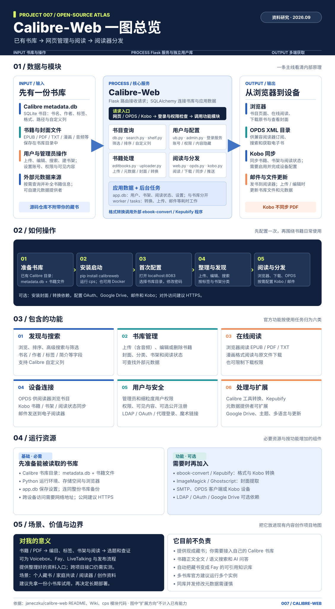
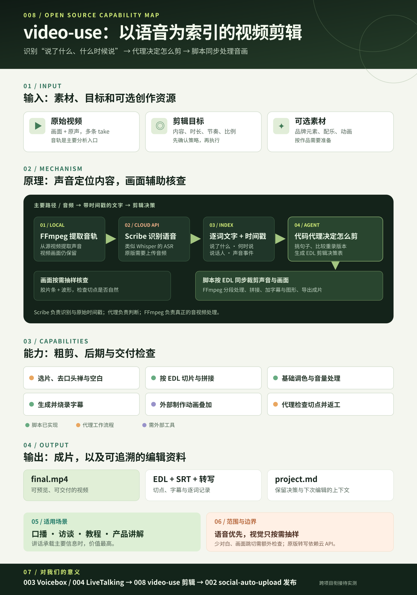
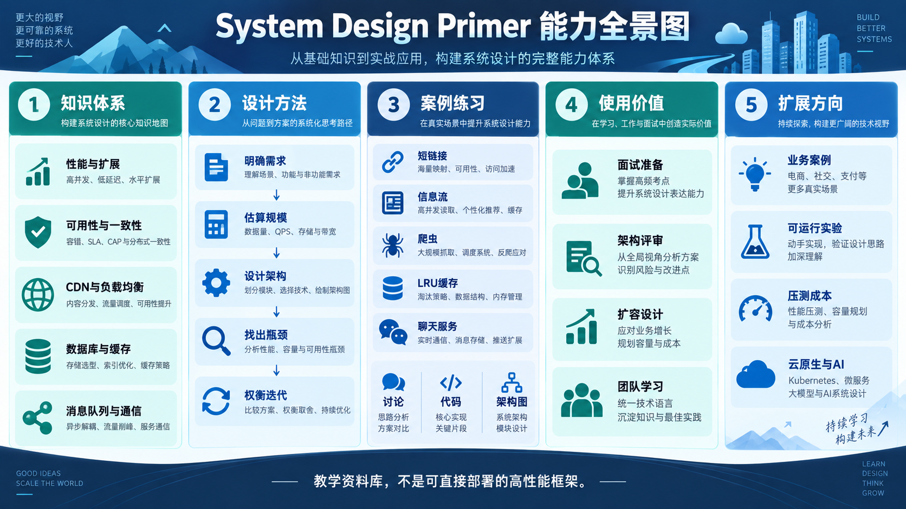
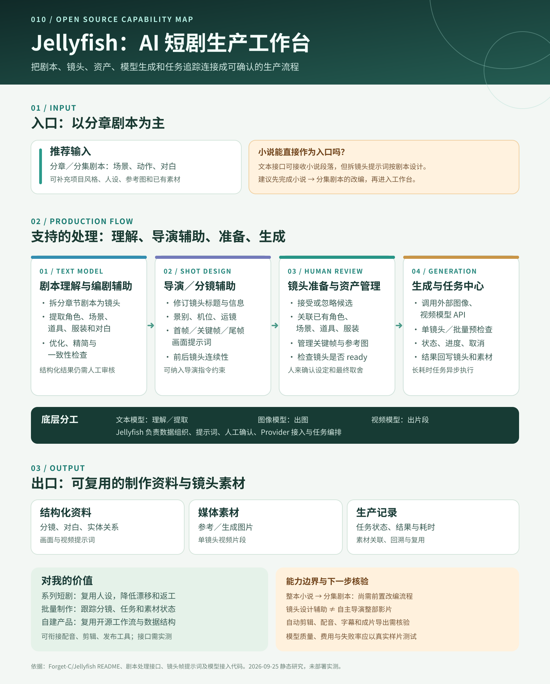
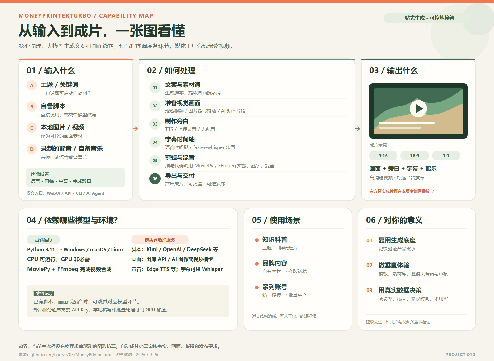

| 001 | Retrieval-based-Voice-Conversion-WebUIRVC-Project · 音色转换 |
- 能力
- 已有语音与歌声换声，支持实时变声、批量转换和声线训练。
- 实现原理
- 多个模型提取发音、音高等线索，由目标声线模型生成新波形，可用检索辅助。
- 对我的意义
- 可复用为换声模块，也可学习模型协作思路；当前先理解，有明确用途时再验证效果。
|
图文研究 →研究笔记 ↗ |
|---|
| 002 | social-auto-uploaddreammis · 多平台内容发布 |
- 能力
- 11 个平台列有视频上传，抖音、小红书、快手还支持图文；部分平台可定时。9 个统一 CLI 平台通过网页操作上传。
- 实现原理
- 用户先在项目浏览器中登录并保存状态。Patchright / Playwright 根据网页元素控制 Chromium，上传、填表、点击发布；B站委托 biliup，TikTok 为旧示例。
- 对我的意义
- 个人 IP 内容做好后，可减少重复上传与排期。选题、平台化表达以及反馈复盘仍由自己把关。
|
查看引导图 ↓完整能力地图 →逐平台发布方式 →研究笔记 ↗ |
|---|
| 003 | Voiceboxjamiepine · 本地 AI 语音工作台 |
- 能力
- 本地 Whisper 听写、7 类 TTS 引擎的参考音色克隆或预置配音、本地 Qwen3 文本处理，辅以长文、多轨编辑和 REST/MCP 接入。
- 实现原理
- 模型首次下载后在运行后端的设备上推理；FastAPI 调度 Whisper、TTS 和 Qwen3，参考录音构造克隆条件，结果保存为音频与记录。
- 对我的意义
- 可用于个人 IP 的口述输入、授权音色配音和 AI 助手发声，并与换声、发布工具衔接。
|
查看能力地图 →完整引导图 →研究笔记 ↗ |
|---|
| 004 | LiveTalkinglipku · 实时数字人引擎 |
- 能力
- 图片或视频制作人物 avatar；文字或已有音频驱动口型，支持会话、实时流与 MP4 录制。
- 底层原理
- 提取音频特征，由 Wav2Lip、MuseTalk 等模型生成面部画面，再贴回人物素材，完成音画同步与推流。
- 使用场景
- 网页数字人客服、课程或展厅讲解、虚拟主播和短视频制作。
- 对我的意义
- 此前已用 MuseTalk 做过成片；需要在线互动时，再评估 LiveTalking 的会话、推流、延迟和成本。
|
查看完整网页 →打开引导图 →研究笔记 ↗ |
|---|
| 005 | WhisperLiveKitQuentinFuxa · 实时语音转写 |
- 能力
- 持续音频实时转写，输出临时和已确认文字；可选翻译、说话人区分与字幕导出。
- 实现原理
- VAD 判断语音活动，Whisper 等模型识别音频，流式策略确认稳定文字并通过 WebSocket 推送。
- 使用场景
- 直播或会议字幕、访谈记录、跨语言交流和语音助手输入。
- 底层依赖
- Python Web 服务、音频处理组件、识别后端与模型权重；可选功能另装依赖，LiveKit 平台非必需。
- 对我的意义
- 录制成片阶段先复用 003 Voicebox 并试效果；实时对话需求明确后再评估延迟和集成。
|
查看能力导读 →我们生成的引导图 →研究笔记 ↗ |
|---|
| 006 | Fayxszyou · 数字人交互与业务连接 |
- 能力
- 接收文字与语音，管理会话、长期记忆和主动播报，按需检索知识或调用 MCP 业务工具，输出文字、语音与终端信号。
- 本质
- 面向数字人等终端的 Agent 交互编排框架；RAG 是可选知识分支，角色画面由终端渲染。
- 使用场景
- 导览、教学、客服查询、虚拟主播和语音交互硬件。
- 对我的意义
- 可连接 005 实时转写与 004 数字人画面；先做最小闭环，再实测延迟、打断与接口适配。
|
 查看完整网页 →摘要架构图 →研究笔记 ↗ 查看完整网页 →摘要架构图 →研究笔记 ↗ |
|---|
| 007 | Calibre-Webjaneczku · 自托管图书管理库 |
- 定位与能力
- 自托管图书管理库。接入已有 Calibre 藏书，编目、搜索、网页阅读、下载，并通过 OPDS 或 Kobo 供书；软件不附带书籍。
- 使用场景
- 个人藏书、家庭共读、阅读器供书，以及选题和写作的参考资料管理。
- 对我的意义
- 为现有内容创作项目补上长期资料入口；书籍正文检索和 AI 问答仍需独立建设。
|
 查看完整网页 →我们生成的引导图 →研究笔记 ↗ |
|---|
| 008 | video-usebrowser-use · 代理视频剪辑 |
- 能力
- 逐词转写、局部抽帧辅助选段；EDL 驱动粗剪、字幕、基础调色与 MP4 渲染。
- 技术原理
- Scribe 识别音频和时间戳，代码代理理解内容并生成 EDL，FFmpeg 同步剪辑音画。
- 隐藏问题
- 切点可能让画面跳变；原版转写依赖云 API，中文和 Windows 效果待实测。
- 使用场景
- 口播、访谈、教程和产品讲解等讲话主导的视频。
- 对我的意义
- 有望连接 Voicebox / LiveTalking 的讲述素材与 social-auto-upload 的发布环节；跨项目衔接待验证。
|
 下方查看引导图 ↓查看能力地图 →打开原图 ↗研究笔记 ↗ |
|---|
| 009 | system-design-primerdonnemartin · 系统设计资料库 |
- 定位与能力
- 高性能与大规模系统设计资料库：梳理性能、扩展、可用性、一致性和常见系统组件，提供设计方法、案例题与学习卡片。
- 使用场景
- 系统设计面试、技术方案评审、扩容讨论和团队学习。
- 对我的意义
- 为现有项目建立并发、延迟、存储和可靠性的检查清单；具体方案需结合真实指标验证。
|
 下方查看引导图 ↓摘要笔记 ↗ |
|---|
| 010 | JellyfishForget-C · AI 短剧生产工作台 |
- 入口
- 以分章剧本为主，可补充风格、设定和参考图；小说需先改编。
- 能力
- 剧本拆镜头、要素提取、导演分镜提示、资产确认与复用、图像和视频生成任务管理。
- 出口
- 分镜、实体关系、对白与提示词，图片和单镜头视频，以及可追踪任务。
- 对我的意义
- 补上系列短剧从剧本到镜头素材的生产环节；完整成片能力待实测。
|
 下方查看引导图 ↓查看完整导读 →研究笔记 ↗ |
|---|
| 011 | RD-AgentMicrosoft Research · 自动化数据研发 |
- 能力
- 把论文或研报推进到初版代码；在量化、数据科学和微调任务中提出方案、运行实验并比较结果。
- 底层原理
- 外部大模型多次理解、假设和写代码；RD-Agent 调度真实执行、指标评价与历史反馈进入下一轮。
- 对我的意义
- 先用于理解论文方法；等语音或 3D 任务有固定数据、基线、评价指标和预算，再回顾小规模试用。
|
查看下方引导图 ↓查看交互展示 →打开导图原图 ↗研究笔记 ↗ |
|---|
| 012 | MoneyPrinterTurboharry0703 · 短视频生产流水线 |
- 能力
- 输入主题、脚本或自有素材，自动完成文案、画面、配音、字幕、配乐和短视频成片。
- 底层原理
- 大模型生成脚本与素材线索；画面可来自现成视频、静态图片加动画，或外部模型生成的动态片段；程序剪辑合成。
- 使用场景
- 知识科普、品牌内容初稿和系列短视频批量制作。
- 对我的意义
- 复用成片流水线验证自有产品；精确物理图解需增加公式与参数驱动的图形层。
|
 查看能力网页与真实案例 →研究笔记 ↗ |
|---|
| 013 | ToolifyAI 产品发现目录 · 来源网站 | - 目录能力
- Toolify 通过类别、榜单和产品页帮助发现候选 AI 工具；具体生成、识别和执行能力由各产品提供。本次分类页快照可见 22 个大类、459 个细分类。
- 产品方向
- 按对话与知识、多媒体创作、开发与流程、增长与商业、研究与识别、生活与专业场景六条方向阅读；完整导图、459 条中文解释、3D 专题及 57 款产品案例提供具体入口。
- 对我的意义
- 对照现有语音、数字人、视频、知识与智能体项目，识别候选能力和链条缺口，再用真实任务比较产品的质量、成本与接入难度。
| 查看整体引导图 →查看全部类别与产品 →研究笔记 ↗ |
|---|
{kind=link}
{kind=link}
{kind=link}
{kind=link}
{kind=link}
{kind=link}
{kind=link}
{kind=link}
{kind=link}